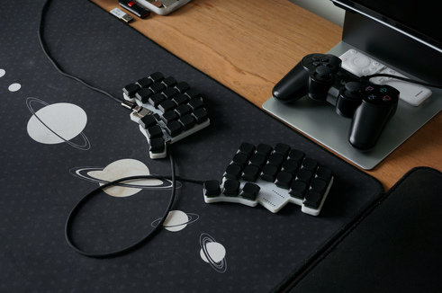

I'm a mechanical engineer at Subaru of Indiana, working on quality control systems for mass-produced vehicles. I spent 8 years in competitive robotics, winning the 2024 VEXU World Championship, and studied mechanical engineering at Purdue with a minor in computer science.
GitHub LinkedIn Email YouTube Spotify
Projects
-
VEX Robotics
Eight years of competitive robotics culminating in the 2024 VEXU World Championship. Robot design, manufacturiing, control algorithms, and open-source libraries.
read more → -

Mechanical Keyboard
Designed a custom split keyboard end-to-end: PCB layout, firmware, and enclosure, optimized for ergonomics and minimal component count with a reversible PCB.
read more → -
appa
Open-source C++ chassis movement library for VEX robots. Odometry, PID control, pure pursuit, and boomerang navigation with a composable options API.
read more →